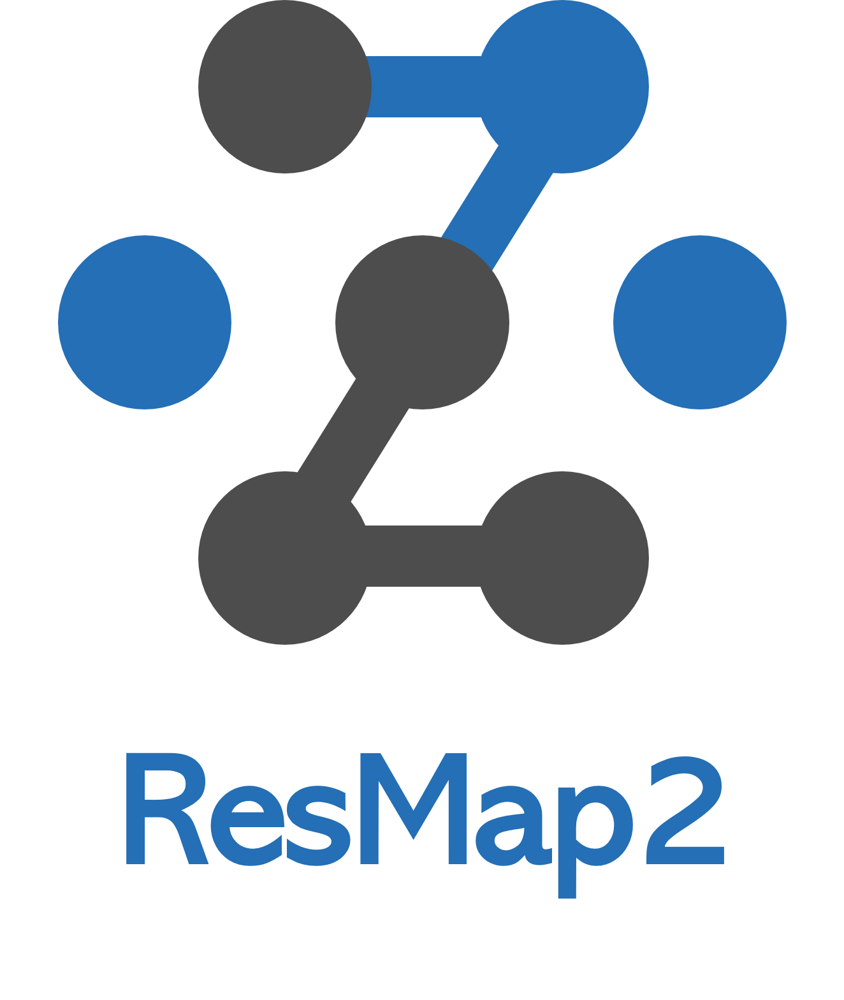

Import du fichier .PRNx
Planimétrie
Points fixes
Points nouveaux
Ellipses de confiance
Rectangles de fiabilité
Fiabilité locale (zi)
Résidus normés (wi)
Vecteurs de déplacement
Altimétrie
Points fixes
Points nouveaux
Intervalle de confiance
Rectangles de fiabilité
Fiabilité locale (zi)
Résidus normés (wi)
Vecteurs de déplacement
Légende
Fiabilité locale (zi)
―― 0 à 25%
―― 25 à 50%
―― 50 à 75%
―― 75 à 100%
Résidus normés (wi)
Planimétrie
―― x à ∞
―― x à x
―― 0.0 à x
Altimétrie
―― x à ∞
―― x à x
―― 0.0 à x
Echelle →
:1
Niveau de confiance des ellipses →
Carte Nationale
swissImage
swissSurface3D
Mens. Off.
-